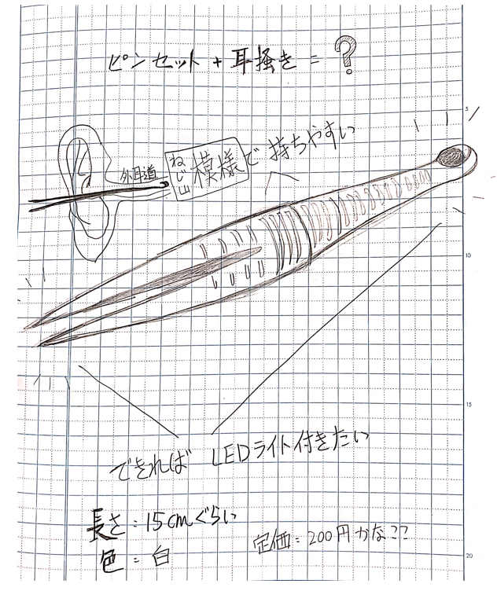
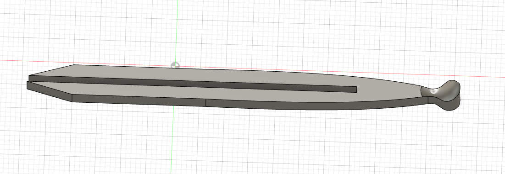
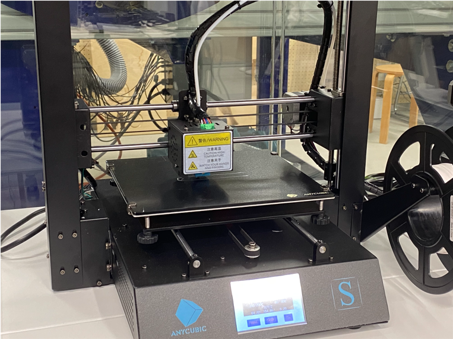
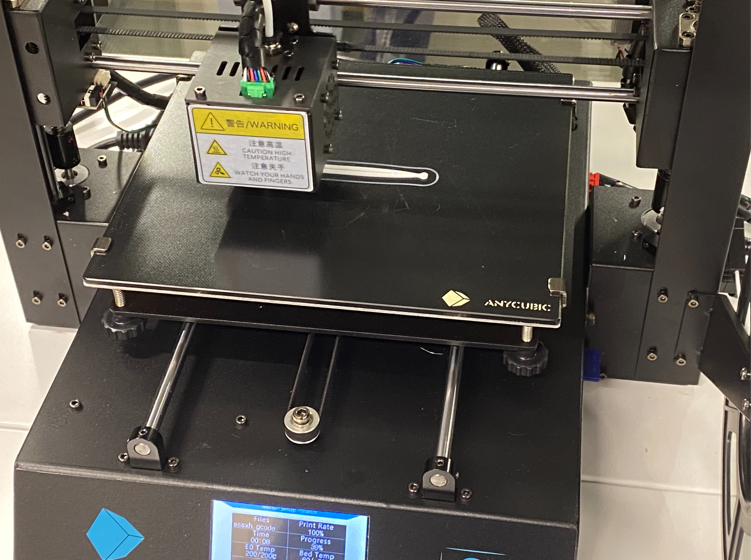
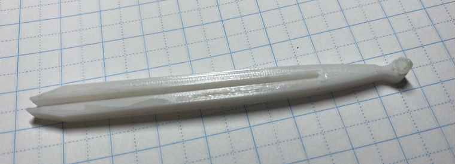
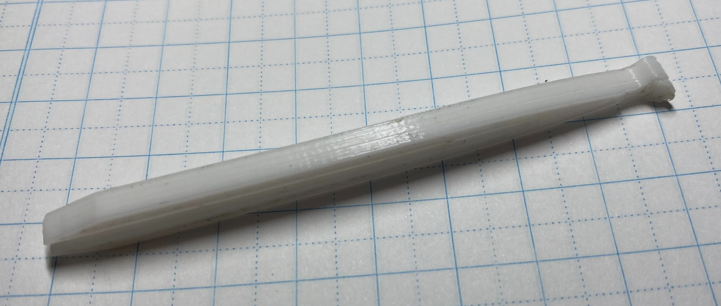

耳かきピンセット
スケッチ

設計ファイル

pincet.stl
プリント中・・・


作ったピンセット


作品の説明
変異の9パターンのなかの「融合」に基づいて考えました。Amazonで「ピンセット」を検索すると、「耳かき」とのセットがよく出ています。「もしピンセットと耳かきが一つになったらより便利になれますか」と思いつつ、この作品を構想しました。
感想
fusion360難しかった…！でもピンセットが完成できても嬉しかった。とても簡単なモデルだが、何日もかかった。YouTubeでビデオを見て、なんとなく分かってきた。ファブラボのスタッフさん（先生かな？）もとても優しくて、３ｄプリントに関する様々な知識を教えてもらった。ありがたい経験だと思う。
改善点
ピンセットの部分は長すぎることに気づいた…美感を求める一方で、物の便利さも考えなければならない。そして、耳かきの部分はどう作ればいいのかに迷っていて、とりあえず曲面を作り出した。実用性を高めるために、まだ改善すべきだと思う。
参考ビデオ
はじめてのFusion360（YouTube)
ホームページに戻る
- デジタルファブリケーショントップページ
- XBPトップページ